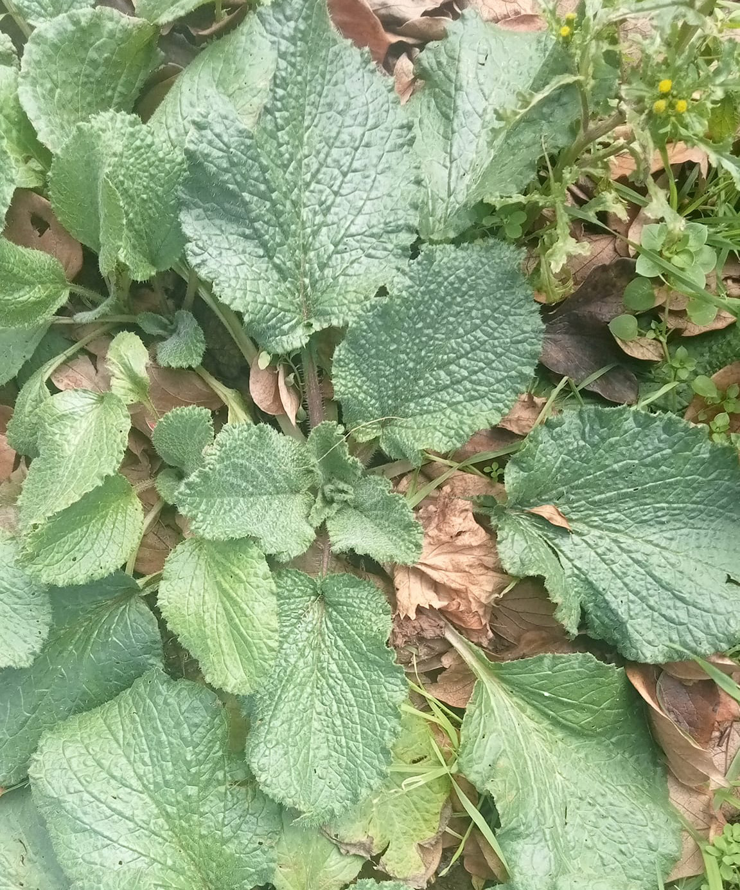
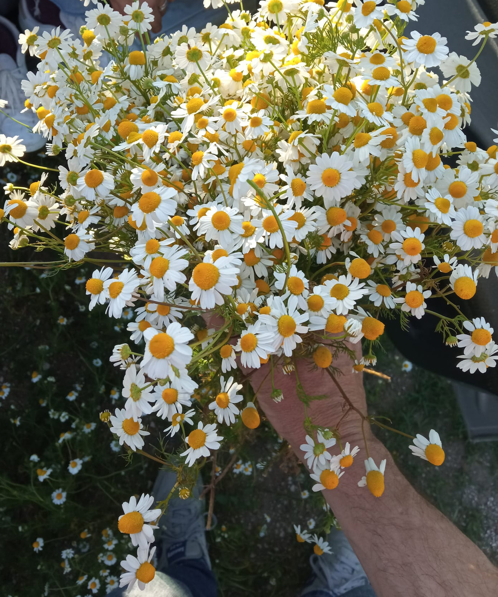
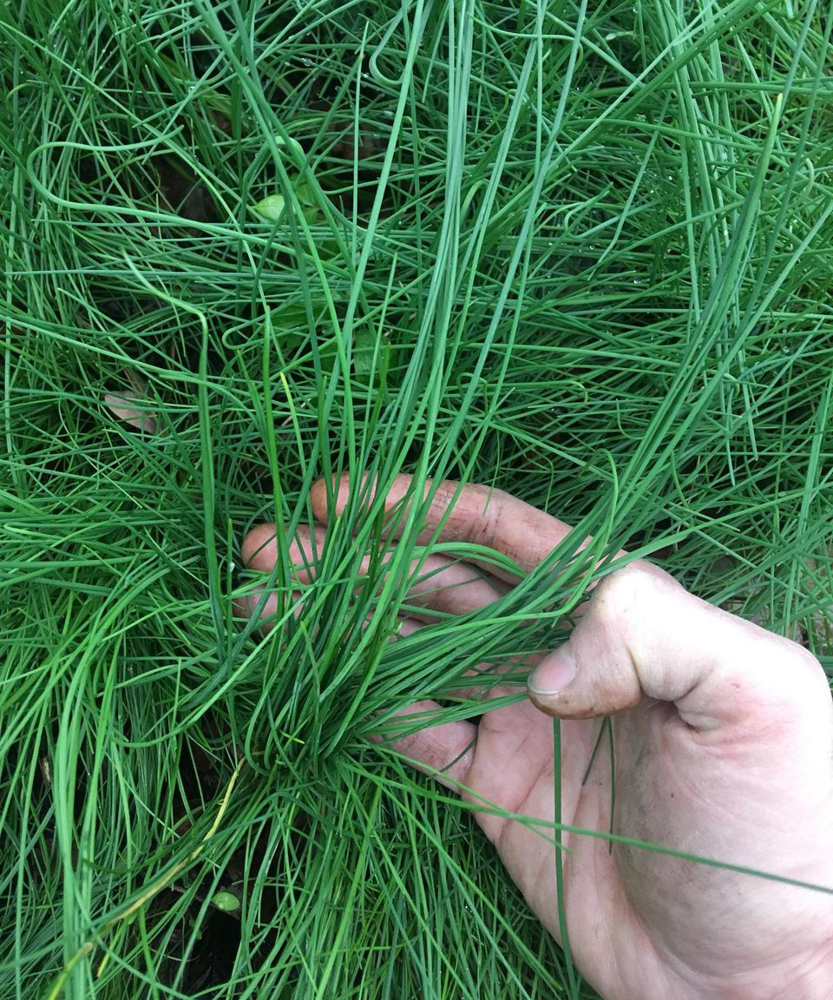
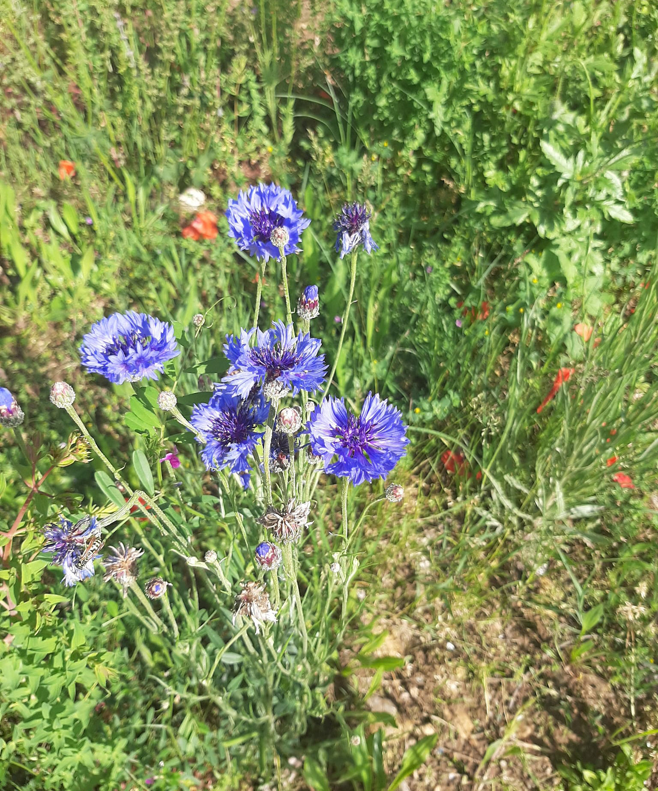
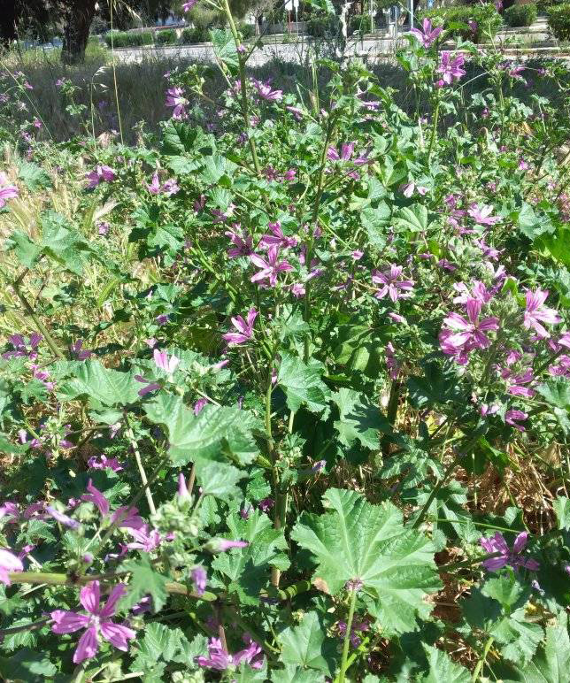

Ricette Selvatiche
Ricette Selvatiche è un archivio condiviso di erbe, ricordi nostalgici, ricette e consigli selvatici.
Asparagina
Asparago Pungitopo

Borragine
Giovanni, 92

Calendula

Camomilla
Annarosa, 24

Cardo Selvatico
Cicoria

Erba Cipollina
Matilde, 53

Finocchietto

Fiordaliso

Gaggia
Gianmatteo, 18

Genziana

Iperico

Lavanda Selvatica
Sara, 23
Luppolo Selvatico/Lüvertin

Malva/Riundela

Menta
Ortiche

Papaveri
Bruna, 80

Pino Mugo
Sara, 24
Salvia Selvatica

Sambuco

Songino/Sarzet
Tiziana, 57

Spinacio Selvatico

Stridoli/Scruzet

Tanaceto/Archibus
Alessandra, 55
Tarassaco/Girasù
Topinambur
Lucia, 60

Valeriana